class: center, middle, inverse, # La 96-a Kongreso de Esperantistoj en Kjuŝu ### 1-a de junio (sabato) ĝis 2-a de junio (dimanĉo), 2024 El aziaj landoj: Warut Bunprasert (Tajlando) 📃 [interreta prezentaĵo](https://warut92.github.io/prezentajxo) --- ## El aziaj landoj 2-a de junio (dimanĉo), 2024 10:20-12:00 Simpozio(realaj partoprenantoj kaj partoprenantoj per zoom) S-ro Warut Bunprasert en Tajlando, S-ino Tran Hoan en Vjetnamio, S-ino Teo emi（Eminjo）en Singapuro， S-ro Heewa Kareemy en Irako, kaj S-ro Kim Seonwook (Suno) en Sud-Koreio. De la esperantisto en ĉiu lando, pri vi mem kaj Esperanto, pri via Esperanto-societo,pri via propra lando (rekomenditaj vidindaĵoj, suveniroj, ktp.) per Zoom. --- class: center, middle, inverse # El aziaj landoj ## S-ro Warut Bunprasert ### Tajlando --- # Kiu mi estas? .left-column[  ] .right-column[ Warut Bunprasert (31) laboro: instruisto de tajlanda tradicia muziko en mezlernejo. loko: Rayong, Tajlando. studo: tajlanda tradicia muziko en Bangkoko. Eklernis Esperanton: 2014 ] --- # Malkovris Esperanton! Studento en Bangkoko. (2014) lernolibro de Stano Marcek .center[  ] --- # Kun esperantisto(j)! (2014) Japana Esperantisto: Tanaka Kazuki (ĉiusemajna renkontiĝo) .center[  ] --- ### fotoj kun aliaj esperantistoj 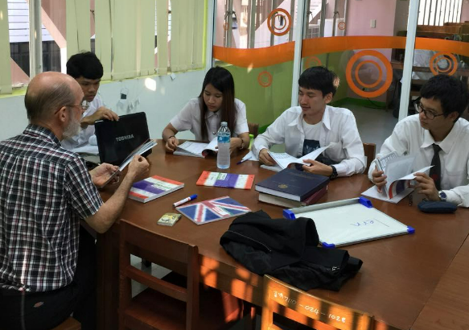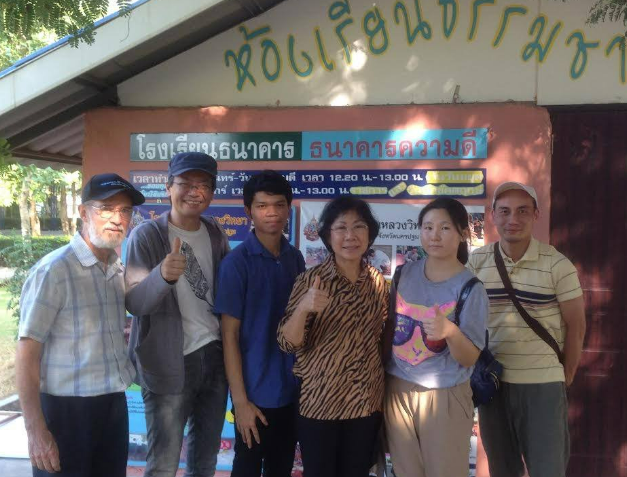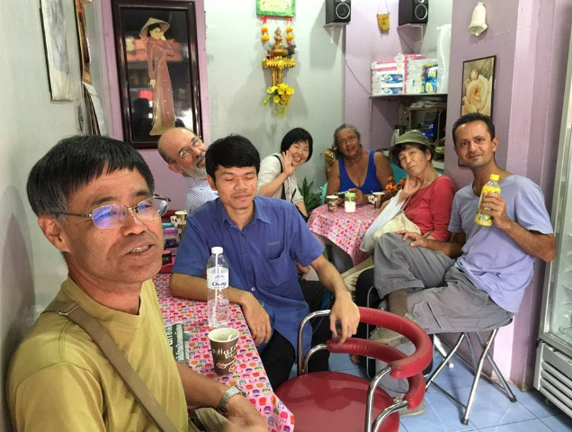 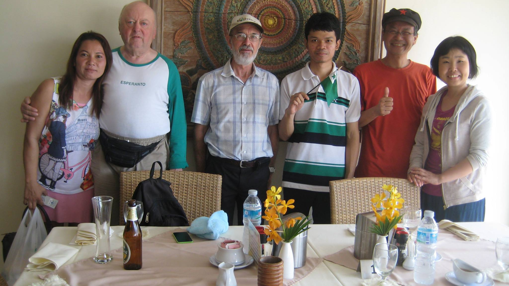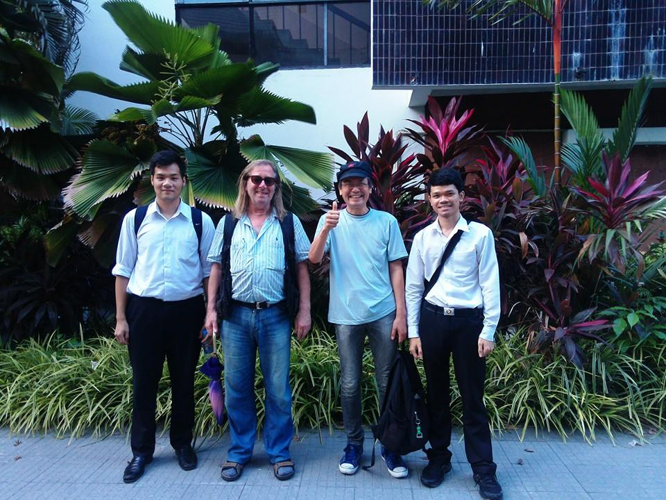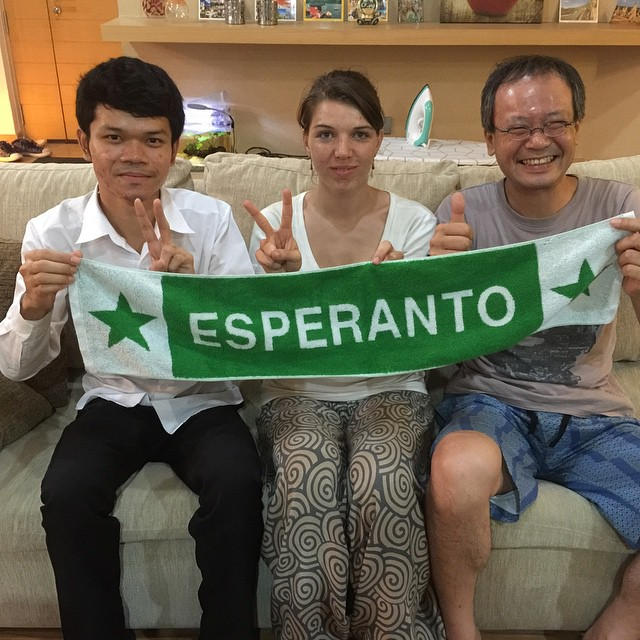 --- # Esperanto-grupo! Mi kaj miaj amikoj kune fondis E-grupojn: 1. Esperanto-grupo en SWU (2015-2016) 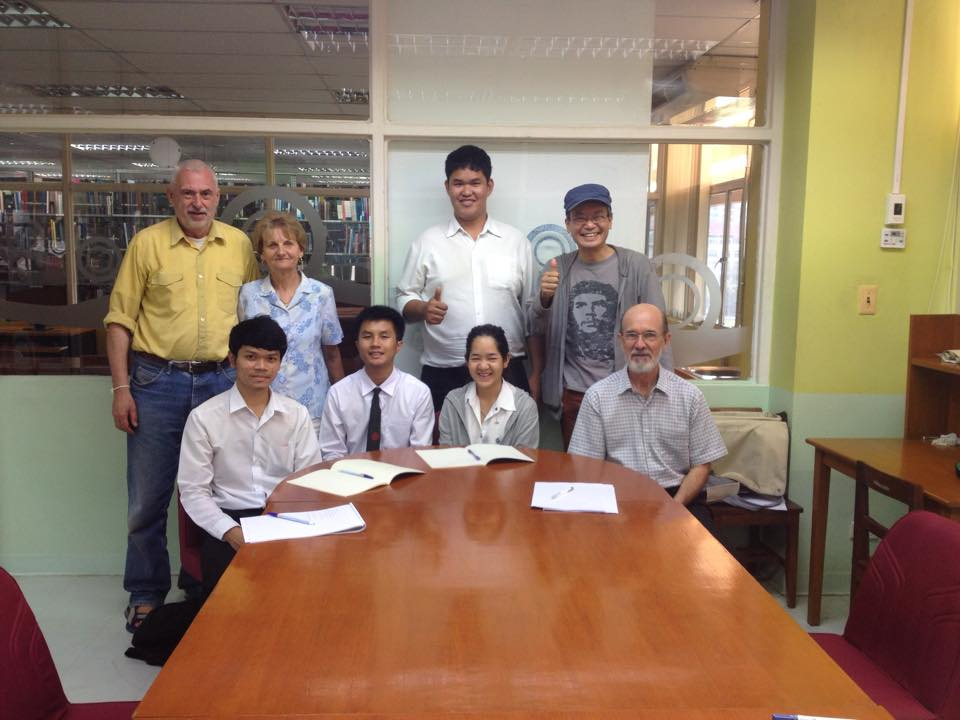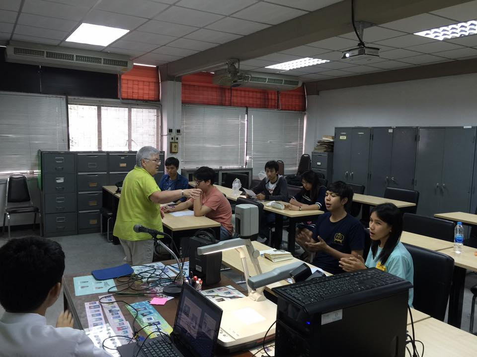 2. Bangkoka Esperanto-Klubo "Verda Elefanto" (2016-nun) 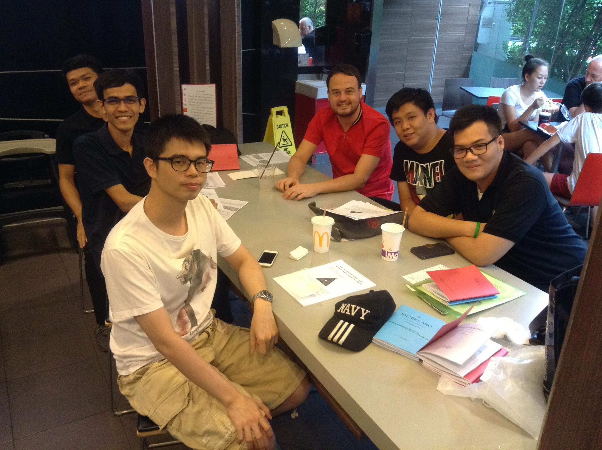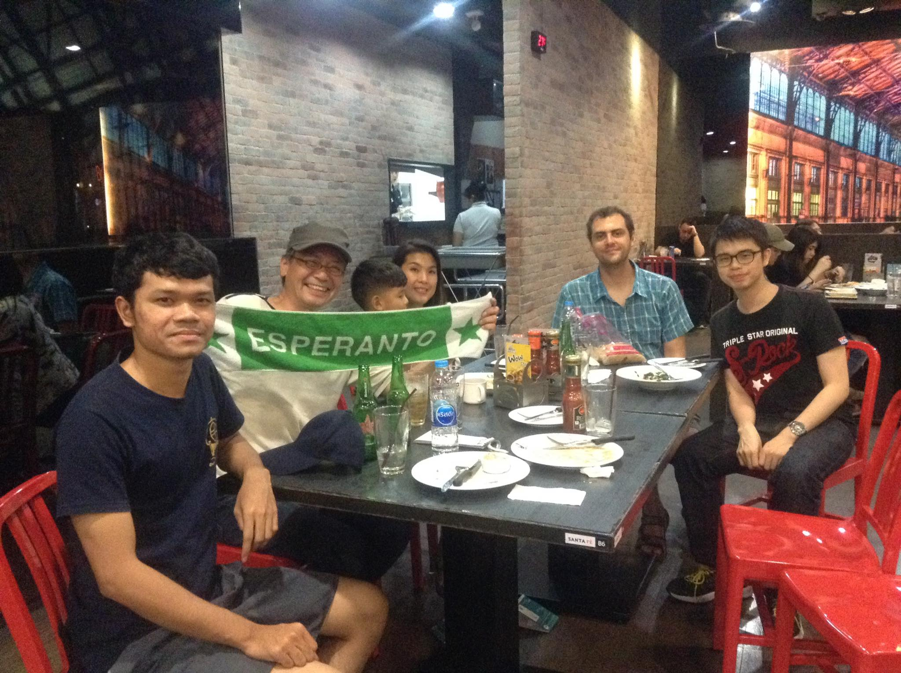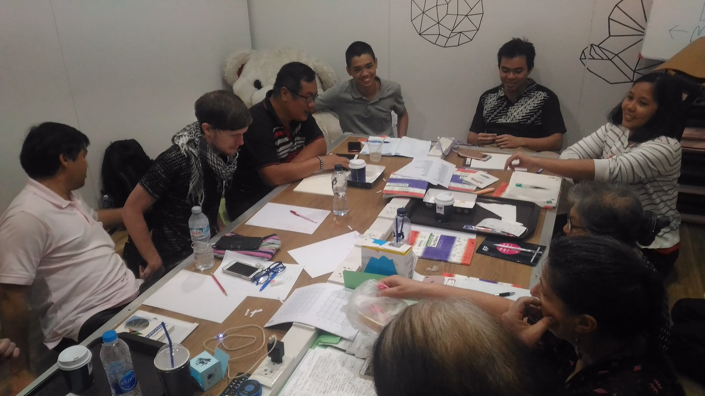 --- class: middle, center, # Esperanto-spertoj --- # Partoprenis Esperanto-eventon! .center[  ] (1.) (2015) La 34-a Komuna Seminario, Busan, Sud-Koreio. --- ## Partoprenis Esperanto-eventon! .center[  ] (2.) (2016) La 40-a Somera Renkontiĝo, Cat Ba, Vjetnamio. --- ## Partoprenis Esperanto-eventon! .center[  ] (3.) (2017) La 102-a Universala Kongreso de Esperanto, Seulo, Sud-koreio. --- ## Partoprenis Esperanto-eventon! .center[  ] (4.) (2018) La 1-a Kunveno de Sudorientazia Junularo, Ayutthaya, Tajlando. (Unu el la organizanto) --- ## Partoprenis Esperanto-eventon! .center[  ] (5.) (2018) Oomoto-centro, Kameoka, Japanio. --- ## Partoprenis Esperanto-eventon! .center[  ] (6.) (2018) Zamenhof-festo, Suita, Japanio. --- ### Miaj tradukoj - Konciza Gramatiko de Esperanto (2016, plibonigita 2018) (ไวยากรณ์ภาษาเอสเปรันโต ฉบับสังเขป) - Ekzercaro de la lingvo internacia "Esperanto" eldono tajlingva (2017) - Esperanto-lernolibro laŭ Zagraba Metodo kun aprobo de la aŭtoro. (2017) - Esperanto-Taja Vortareto (2017, plibonigita 2018) - Esperanto-rakonteto "Bona restoracio, sed multekosta" kun gramatika klarigo kaj vortolisto (2018) - Unua Libro por tajlandanoj (2023) - [Reta Esperanto - Taja Vortaro พจนานุกรมเอสเปรันโต-ไทย](https://vortaro.warut.net) - fojfoje, mi tradukas tajajn fabelojn en Esperanton. --- class: center, middle, # Demandojn? --- class: center, middle, inverse # ขอบคุณครับ # Dankojn! 💖